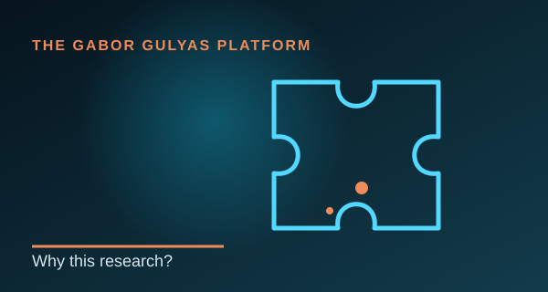
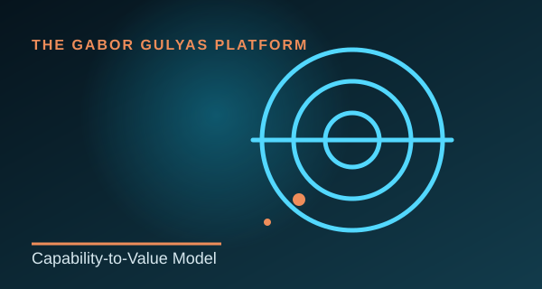
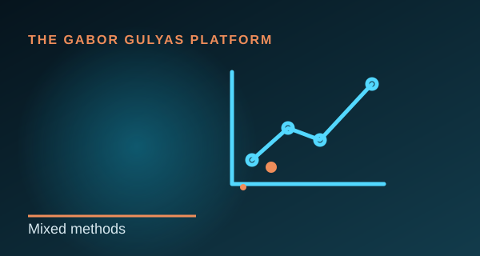
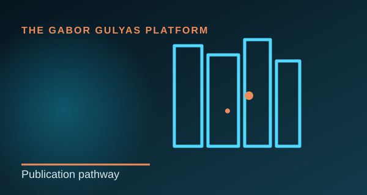
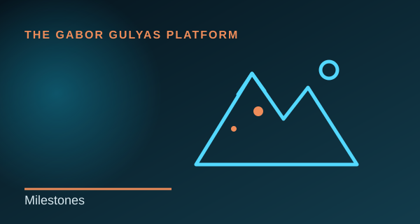

Research question
Why AI adoption is not enough
Access and adoption do not guarantee value.
Read more →The central research problem is the gap between adopting AI tools and generating repeatable, sustainable business value.
How organisational capabilities turn AI access into sustainable business value in UK SMEs.

A clear distinction between current research, working papers and future peer-reviewed publication.

Access and adoption do not guarantee value.
Read more →The central research problem is the gap between adopting AI tools and generating repeatable, sustainable business value.

 GiGi · AI / Technology
GiGi · AI / TechnologyA framework connecting adoption, capability integration and outcomes.
Read more →The model proposes that leadership, learning, readiness, absorptive capacity, innovation and knowledge sharing shape AI-enabled value.
 GiGi · AI / Technology
GiGi · AI / TechnologyConceptual foundation currently in development.
Read more →Beyond AI Adoption: Organisational Capabilities for Sustainable Value Creation in UK SMEs.
Working paper in development; references, UK SME context and the model diagram are being strengthened.

Survey first; interviews to explain the patterns.
Read more →The planned design combines quantitative evidence from UK SMEs with 20–25 qualitative interviews.

Working paper → preprint → conference or journal article.
Read more →This section will clearly distinguish working papers, preprints and peer-reviewed publications.

Applications, model development, writing and future study.
Read more →The platform will record progress transparently and update each stage as it develops.